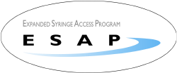

For more information, visit the New York State Expanded Syringe Access Program online.
NYS-Authorized Syringe Exchange Programs
Household Drug Collection Schedule
New York State's 911 Good Samaritan Law protects persons seeking assistance in good faith as well as persons who have overdosed from drug-related criminal charges.
Brought to you by the Institute for Community Health Promotion at SUNY Buffalo State in collaboration with the Erie County Department of Health